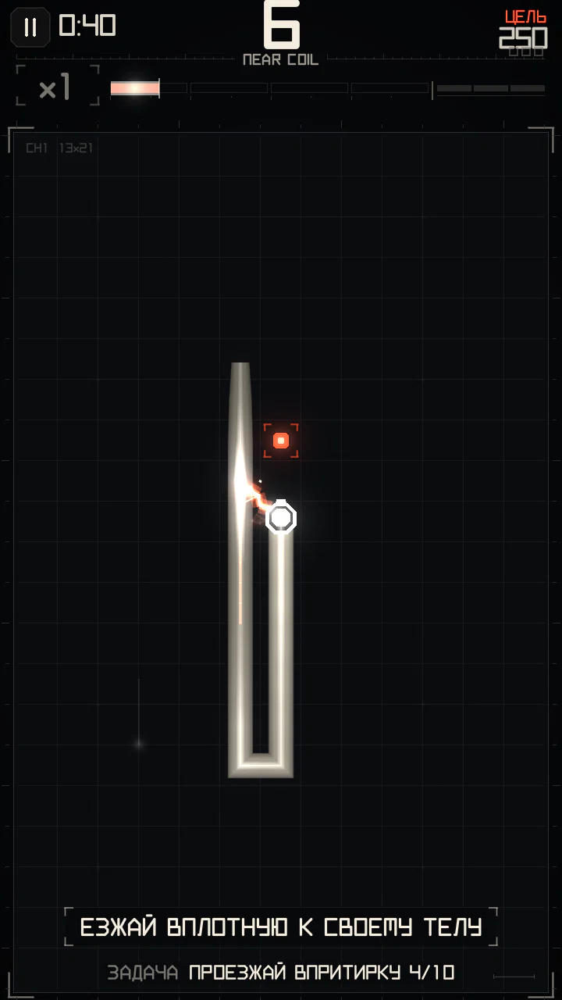
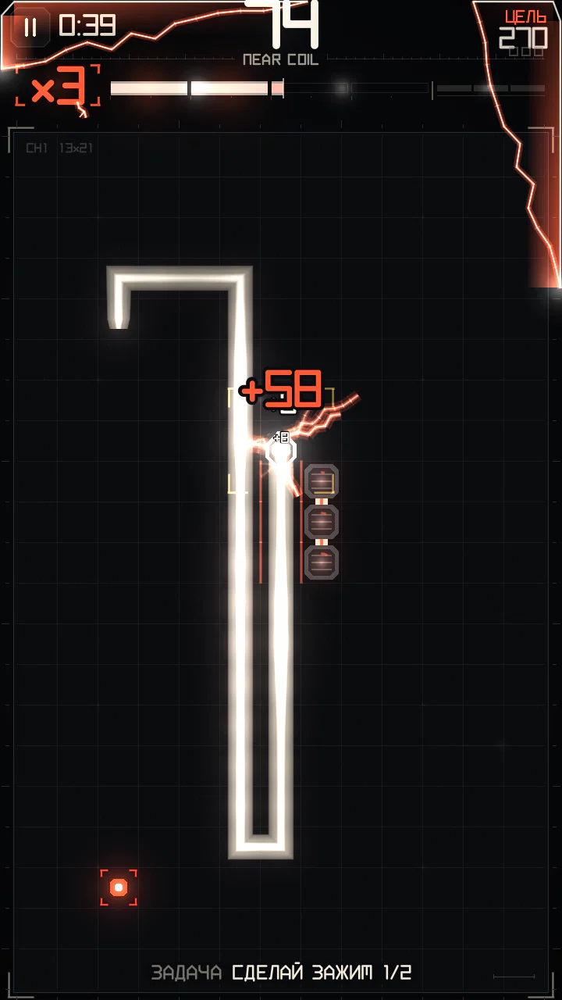
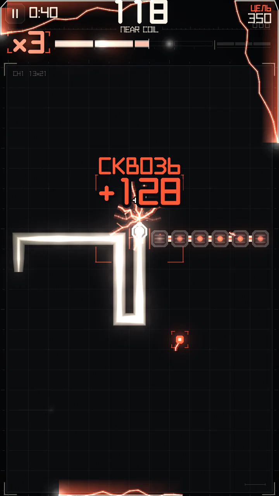
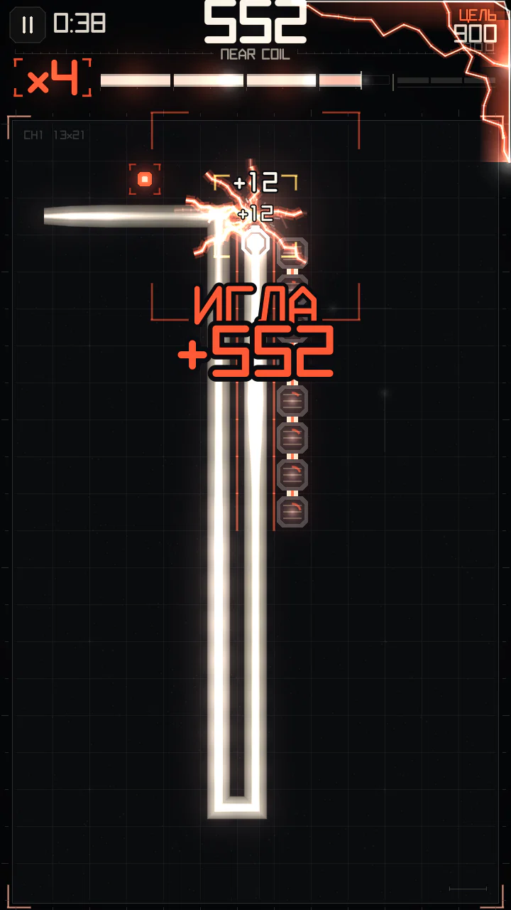
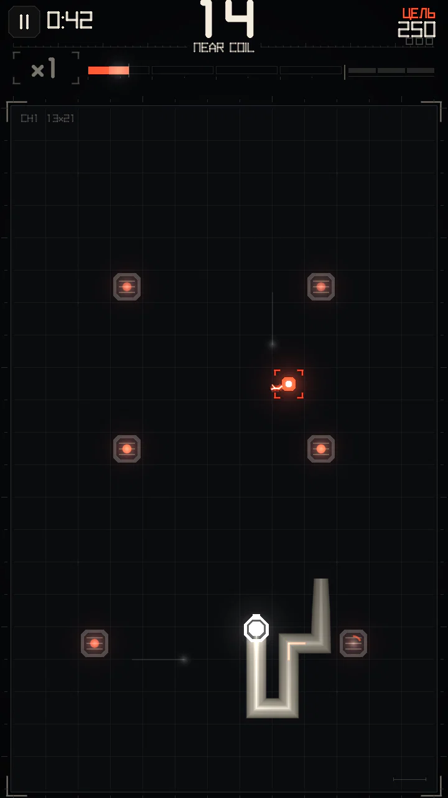

Сближения и манёвры
Всё, что заряжает шкалу за счёт близости: одиночные сближения, скольжение вдоль тела и три манёвра сквозь щели — ЗАЖИМ, СКВОЗЬ и ИГЛА.
Сближение (ВПРИТИРКУ)


После каждого шага игра смотрит на четыре клетки вокруг головы (сверху, снизу, слева, справа — не по диагонали). Каждая, в которой есть проводник, даёт сближение:
- Твоё тело, но только его старая часть: 5 клеток сразу за головой (шея и крутая шпилька) не считаются, как и самый кончик хвоста, который сейчас уедет. Нужно по-настоящему ехать вдоль тела.
- Конструкции: изоляторы кампании, столбы ворот, живые стойки и шины реле, провода под током. Врезаться в них смертельно, но для сближений они годятся.
Правила, которые держат игру честной:
- Каждая клетка тела срабатывает один раз. После этого внутри неё видна тонкая искра («заряжена»), и больше она не платит.
- Клетка поля, в которой голова только что дала сближение, не может дать новое ещё 60 шагов — так нельзя бесконечно кружить за собственным хвостом.
- Изолятор платит, гаснет и снова загорается через 40 шагов (ниже).
Сколько это стоит
| Вид | Когда | Заряд | Очки |
|---|---|---|---|
| Сближение | первое после паузы | 30 | 2 за клетку × множитель |
| СКОЛЬЖЕНИЕ | следующее сближение не позже чем через 3 шага после прошлого (езда вдоль коридора) | 9 | 2 за клетку × множитель |
| Двойное | две клетки и больше за один шаг (например, тело с обеих сторон) | 45 | 2 за клетку × множитель |
Заряд от сближений — «мелкий»: чем выше множитель, тем меньшая его часть до тебя доходит — 100 % на ×1, 45 % на ×3 и всего 15 % на ×5. Одними сближениями множитель поднимается примерно до ×3; выше нужны манёвры. В горячей зоне каждое сближение заряжает полностью.
Тесные шаги и манёвры
Тесный шаг — шаг, на котором обе боковые клетки головы (слева и справа по ходу движения) заняты проводником: ты в щели шириной в одну клетку. Каждый тесный шаг со свежей стороной даёт 12 заряда, а пока ты внутри щели, шкала не утекает.
Когда голова выходит из щели, серия тесных шагов оценивается:
| Манёвр | Длина щели | Условие | Очки (× множитель) | Заряд |
|---|---|---|---|---|
| ЗАЖИМ | 2–5 шагов | не СКВОЗЬ | 15 + 4 за шаг | 100 |
| СКВОЗЬ | 1–4 шага | щель делит поле: обхода короче 10 клеток нет | 60 + 4 за шаг | 240 |
| ИГЛА | от 6 шагов | длинный коридор | 150 + 4 за шаг | 340 |
То есть щель в один шаг считается СКВОЗЬ, только если она правда ведёт сквозь стену из твоего тела; короткая щель с лёгким обходом — это ЗАЖИМ (от двух шагов) или ничего (один шаг).






Только свежие стороны
Щель платит, только если хотя бы одна её сторона — свежее тело, ещё ни разу не бывшее стороной щели. Повторный проезд по тому же коридору ничего не даёт. Щель только из столбов — тоже не манёвр: за неё платят сами ворота.
Серии
Манёвр, сделанный меньше чем через 30 шагов после предыдущего, продолжает серию (на экране — СЕРИЯ N). Серия умножает и очки, и заряд манёвра:
| Манёвр в серии | 1-й | 2-й | 3-й | 4-й | 5-й и дальше |
|---|---|---|---|---|---|
| Бонус | ×1 | ×1,25 | ×1,5 | ×1,75 | ×2 |
Серия прерывается, если 30 шагов проходят без манёвра или шкала опустела.
Пример
СКВОЗЬ через щель в одну клетку на ×3, второй манёвр серии: (60 + 4 × 1) × 1,25 = 80 базовых очков, × 3 = 240 очков и 300 заряда.
Столкновение внутри щели ничего за неё не даёт: забег кончается, СКВОЗЬ или ЗАЖИМ не засчитан.
Изоляторы


На полях кампании бывают неподвижные блоки — изоляторы. Врезаться в них — конец забега. Проход впритирку — сближение, которое всегда оплачивается полностью (это не твоё тело, голод на него не действует). После сближения блок гаснет и загорается снова через 40 шагов. Изоляторы тоже бывают стенками щели: ЗАЖИМ между телом и рядом блоков засчитывается.